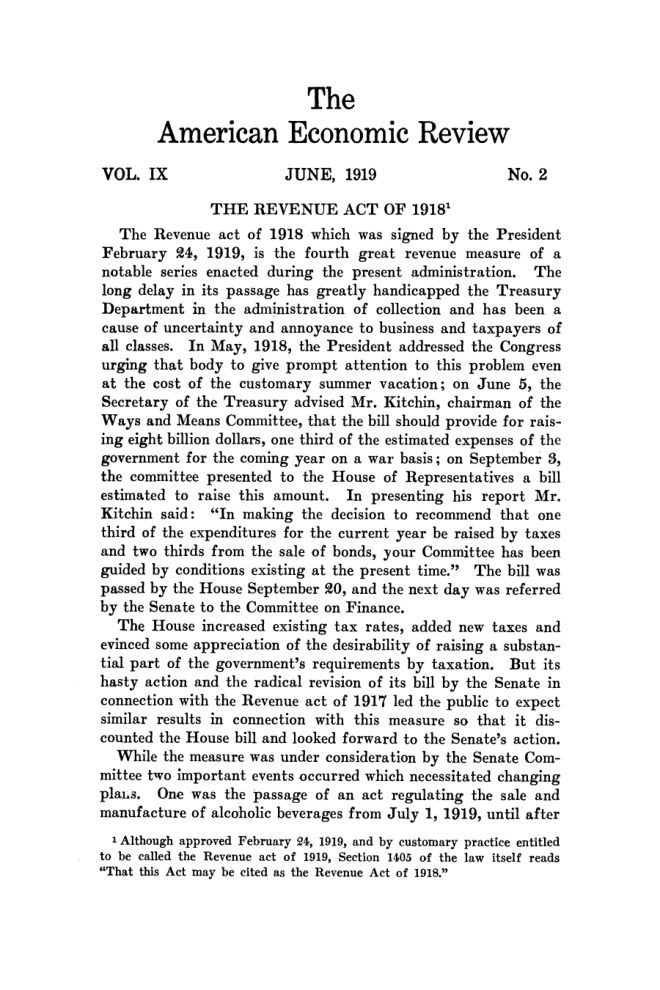

Os Blakey, 1919: a lei que tributou a guerra depois dela
Leitura: 8 min
A lei da receita de 1918, assinada em fevereiro de 1919, previa arrecadar seis bilhões de dólares, quatro quintos da renda e dos lucros de guerra. Para os Blakey, melhorava as anteriores, mas deixava demais para o empréstimo.


A empresa A tem capital de 100.000 dólares, lucro médio de 7.000 dólares antes da guerra e lucro líquido de 75.000 dólares no ano tributável. Pela lei de 1917, pagaria 35.336 dólares de impostos. Pela nova lei, pagaria 52.408. Roy G. e Gladys C. Blakey, da Universidade de Minnesota, usam esse exemplo numa nota de rodapé para mostrar como funcionava a peça central da lei da receita assinada em 24 de fevereiro de 1919, a quarta grande lei de receita do governo então em exercício.
O artigo abre a American Economic Review de junho de 1919 e percorre os quatorze títulos da lei. É um texto de referência, quase um manual, mas com opiniões claras dos autores sobre o que estava certo e o que faltava.
Por que a lei demorou tanto?
Em maio de 1918, o presidente pediu ao Congresso que tratasse do tema mesmo ao custo das férias de verão. Em 5 de junho, o secretário do Tesouro avisou a Kitchin, presidente da comissão de Meios e Recursos da Câmara, que o projeto deveria arrecadar oito bilhões de dólares, um terço da despesa estimada para um ano de guerra. A comissão apresentou o projeto em 3 de setembro, e a Câmara o aprovou no dia 20.
No Senado, duas mudanças refizeram as contas. A lei de proibição temporária de bebidas reduziu em 500 milhões a receita esperada sobre elas, e o armistício baixou a despesa prevista de cerca de 24 bilhões para 18 bilhões. O projeto do Senado previa então seis bilhões. Depois, a ratificação da emenda constitucional de proibição tirou mais de meio bilhão. O Senado aprovou o texto em 23 de dezembro, com cerca de seiscentas mudanças; a comissão de conciliação chegou a acordo em 1º de fevereiro.
A demora, dizem os autores, atrapalhou muito o Tesouro na cobrança e gerou incerteza para empresas e contribuintes. No Senado, La Follette pediu mais impostos e menos tributos sobre consumo; Smoot defendeu tirar quase toda a receita de um imposto de 1% sobre vendas.
Como ficou o imposto de renda?
O imposto normal da pessoa física passou a 6% sobre os primeiros 4.000 dólares acima das isenções e 12% sobre o restante, com 4% e 8% a partir de 1919. Os autores lamentam que o Congresso tenha mantido duas tabelas, complicação herdada da lei anterior. A sobretaxa subia um ponto a cada 2.000 dólares entre 6.000 e 100.000 dólares e chegava a 65% acima de um milhão. A isenção ficou em 1.000 dólares para solteiros e 2.000 para casados, e o abatimento de 200 dólares passou de cada filho a cada dependente, o que eliminou, para os Blakey, uma distinção injusta.
Os autores apontam incoerências: quem toma o bonde para ir ao trabalho não deduz a passagem, mas o dono de automóvel deduz depreciação e manutenção se o usa no negócio. Lembram a dúvida sobre a tributação de salários de funcionários estaduais, que a lei deixou ambígua ao suprimir a palavra estado, e a questão, ainda pendente na Suprema Corte, da tributação dos dividendos em ações. Elogiam as quatro datas de pagamento, que dariam trabalho ao ano todo aos coletores, e a compensação de impostos pagos a mais.
Como se tributavam os lucros da guerra?
O Título III juntava dois métodos. Sobre o lucro acima de um crédito de 3.000 dólares mais 8% do capital investido, e até 20% desse capital, a alíquota era de 30%; acima de 20%, de 65%. Um terceiro patamar cobrava a diferença entre 80% do lucro acima do crédito de lucros de guerra, baseado na média de 1911 a 1913, e o que já fora pago nos dois primeiros. Em 1919, as alíquotas cairiam a 20% e 40%, sem o terceiro patamar, mas haveria imposto sobre lucros de contratos com o governo feitos durante a guerra.
No exemplo da empresa A, o imposto normal é de 2.808 dólares, o de lucros extraordinários de 38.450 e o de lucros de guerra de 11.150. A definição de capital investido ocupava páginas, e a lei acabou por permitir que o comissário calculasse o imposto por comparação com empresas representativas do mesmo ramo quando o capital não pudesse ser apurado.
Os autores consideram a alíquota de 80% justa, porque nada parece tão antiético quanto “alguns indivíduos fazerem fortuna com uma calamidade mundial”. (“a few individuals make a fortune out of a world calamity”)
Os Blakey ressalvam que, com a isenção de 3.000 dólares e o crédito mínimo de 10% do capital, a lei alcançava bem menos de 80% dos lucros de guerra. Os autores calculam que o lucro líquido das empresas foi de cerca de 10,5 bilhões em 1917 e de pouco menos de 10 bilhões em 1918, e que o imposto de lucros de guerra alcançaria só cerca de 2,4 bilhões. Criticam ainda a isenção dada às mineradoras de ouro: com o estoque de ouro do país mais de 60% maior que em agosto de 1914, o problema era o excesso de crédito, e não a falta de metal.
O que mais a lei tributava?
O imposto sobre heranças foi mantido sobre o espólio, com alíquotas menores que as da lei anterior até 1,5 milhão de dólares e isenção de 50.000 dólares. Os autores rejeitam o argumento de que o tributo invadia a competência dos estados. A bebida destilada passou a 6,40 dólares por galão, mas a proibição reduziria a receita a uma fração. O imposto de um centavo por dez centavos gastos nas sorveterias lhes parece irritante, difícil de cobrar e pouco rendoso.
Os compradores pagariam 10% sobre artigos acima de certos preços, como chapéus femininos de mais de 15 dólares, sapatos de mais de 10 dólares o par e camisas masculinas de mais de 3 dólares. O imposto sobre trabalho infantil, de 10% do lucro líquido de minas, fábricas e oficinas que empregassem crianças abaixo de certas idades, substituía a lei que a Suprema Corte derrubara por cinco votos a quatro. Os autores observam que sua aplicação dependeria de um registro de nascimentos que o país ainda não tinha.
O Senado incluíra um imposto de 100% sobre contribuições acima de 500 dólares a campanhas nacionais, que caiu na conciliação. Os Blakey lamentam: o imposto teria reduzido a corrupção eleitoral.
O que a lei mudou no sistema tributário federal?
Antes da guerra, receita e despesa federais ficavam abaixo de um bilhão de dólares por ano. Até 1913, cerca de metade da receita vinha das tarifas de importação, quase um terço das bebidas e a maior parte do resto do fumo. A nova lei previa arrecadar, de fontes que não eram importações nem bebidas, sete vezes a receita total de antes da guerra.
Os autores veem duas tendências: o afastamento dos impostos sobre consumo e o abandono da retenção na fonte, adotada em 1913 e substituída por informações na fonte. E apontam uma marca da lei: a “lei feita pelo comissário”. Só no título do imposto de renda, havia dezenove casos em que o comissário da Receita deveria baixar regulamentos para situações especiais.
Na minha leitura
Na minha leitura, o artigo dos Blakey vale como raro registro de uma decisão fiscal tomada no meio de uma mudança de conjuntura. A lei foi desenhada para a guerra e aprovada para a paz, e as previsões de receita foram refeitas três vezes em poucos meses. O exemplo da empresa A mostra como a base do imposto sobre lucros extraordinários dependia de um conceito, o capital investido, que a própria lei não conseguia definir sem recorrer à comparação com outras empresas.
O balanço final é sobre a escolha entre imposto e dívida. Os autores aceitam que seis bilhões eram um fardo pesado, mas sustentam que o empréstimo excessivo pesaria mais, e que os lucros de guerra eram a fonte mais fácil de alcançar enquanto ainda não tinham sido repassados a terceiros. O argumento é de oportunidade: certas bases tributárias existem por pouco tempo.
Glossário
- Imposto normal
- alíquota básica do imposto de renda da pessoa física, cobrada sobre toda a renda tributável.
- Sobretaxa (surtax)
- adicional progressivo sobre a renda acima de certo limite.
- Capital investido
- base do imposto sobre lucros extraordinários: dinheiro e bens aportados, lucros retidos e, com limites, intangíveis.
- Crédito de lucros de guerra
- parcela do lucro isenta, igual a 3.000 dólares mais o lucro médio de antes da guerra, ajustado pela variação do capital.
- Retenção na fonte
- cobrança do imposto pelo pagador da renda, antes de entregá-la ao beneficiário.
Fontes
- The Revenue Act of 1918 — Roy G. Blakey e Gladys C. Blakey (University of Minnesota) (pp. 214–243). JSTOR · Internet Archive (PDF)
- Edição completa, com os demais artigos: Nº 158 do Arquivo.
Documento em domínio público (EUA, publicado antes de 1931), via JSTOR Early Journal Content e Internet Archive. Resumo e comentário do autor deste site, sem afiliação com a American Economic Association. Encontrou um erro? Escreva: a correção é publicada no próprio texto, com data.
↑ Nº 158 · A lei da receita de 1918, o dólar estável e a terra do Lácio Knibbs e Fisher, 1919: a moeda pode ter poder de compra fixo? →